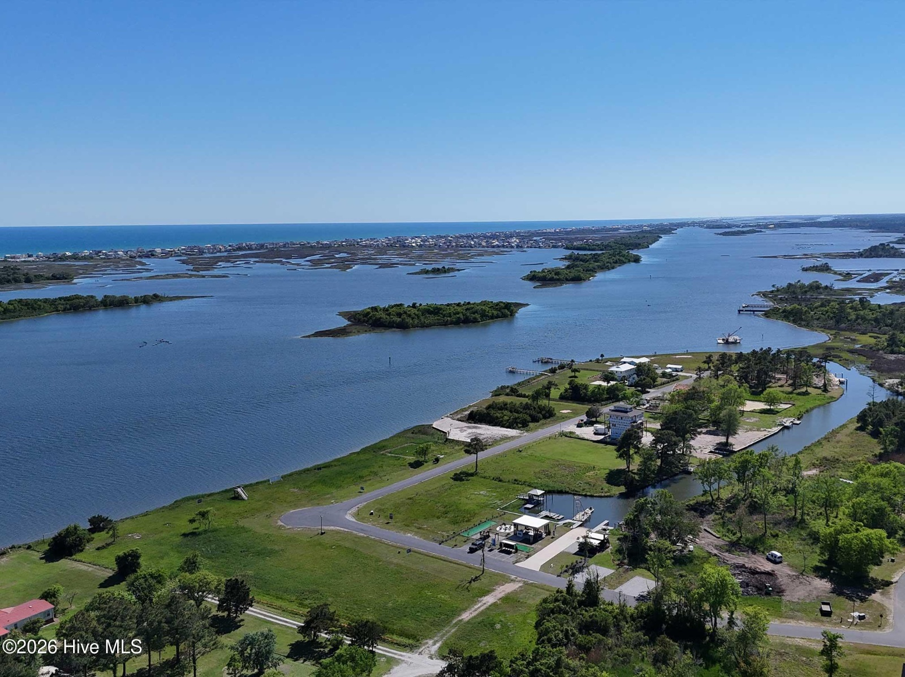
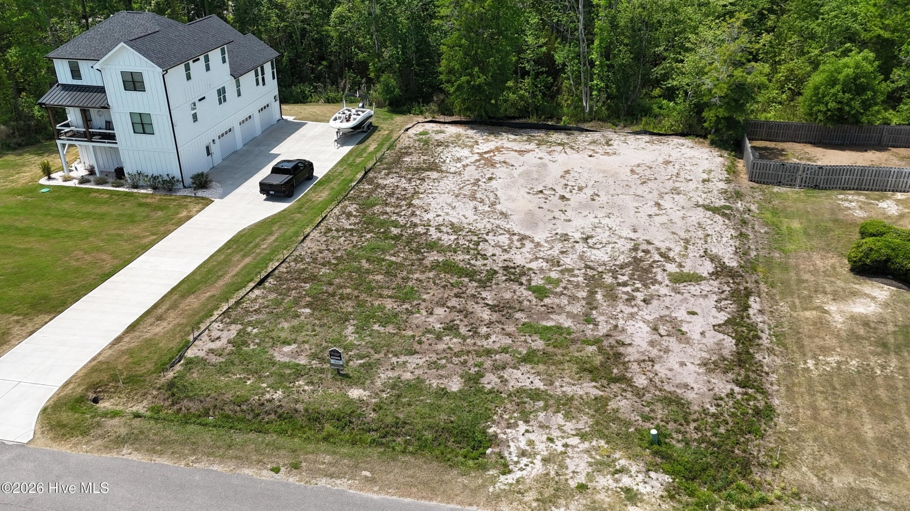
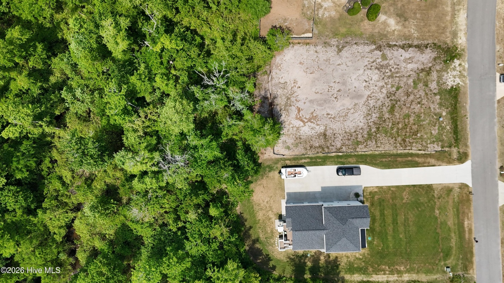
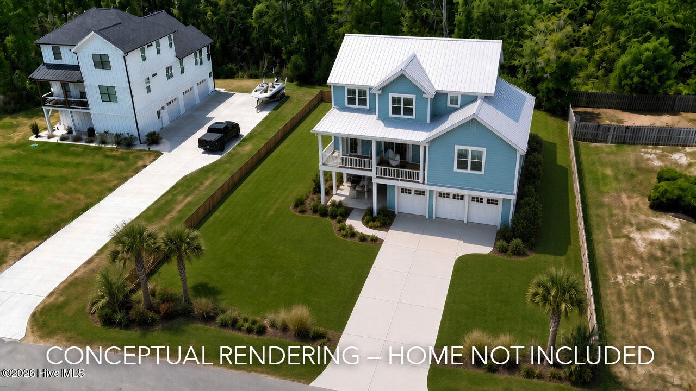

Oats Court

The homesite
.66 acre
Conceptual rendering — home not includedFor sale in Redd's Cove
208 River Oats Court · Holly Ridge, NC · $123,900 Build where the water sets the pace. This .66-acre homesite in Redd's Cove is ready when you are, with a 4-bedroom septic permit already in hand. No waiting, no guesswork--just a clear path to your coastal home. Enjoy private, gated access to the community boat ramp, kayak launch with day dock, and a relaxed amenity area designed for gathering--fire pit, cornhole, and open-air spaces that make evenings feel effortless. Located just minutes from Topsail Island, yet tucked away enough to feel like your own escape, Redd's Cove offers that rare balance of access and privacy. Buyers and builders both welcome — bring your own plan and builder, or let me connect you with the builders already working in this market. Message me for the plat, the permit and a walk of the lot. DRG | Premier Real Estate · (910) 200-5654